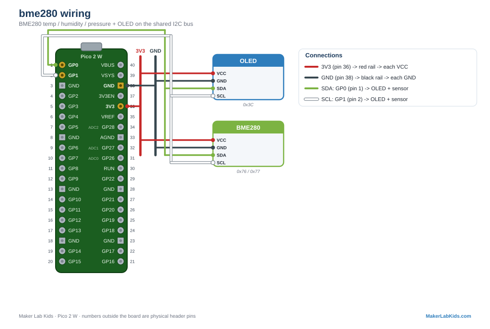
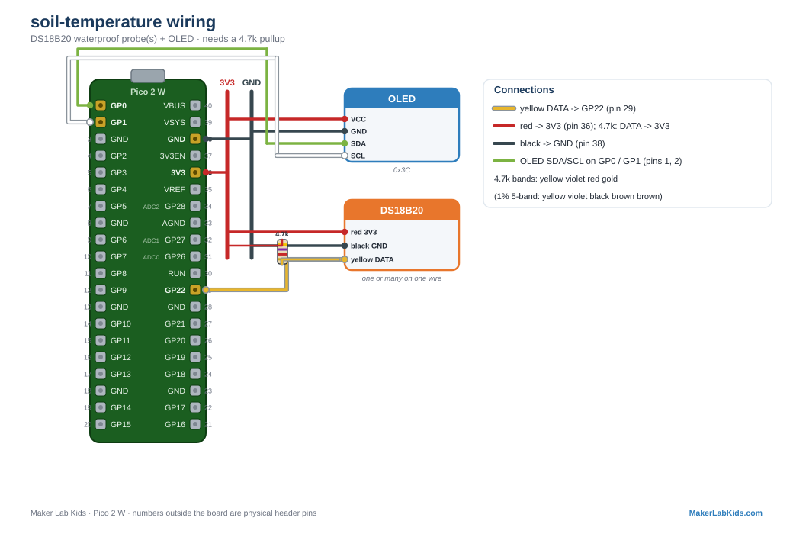
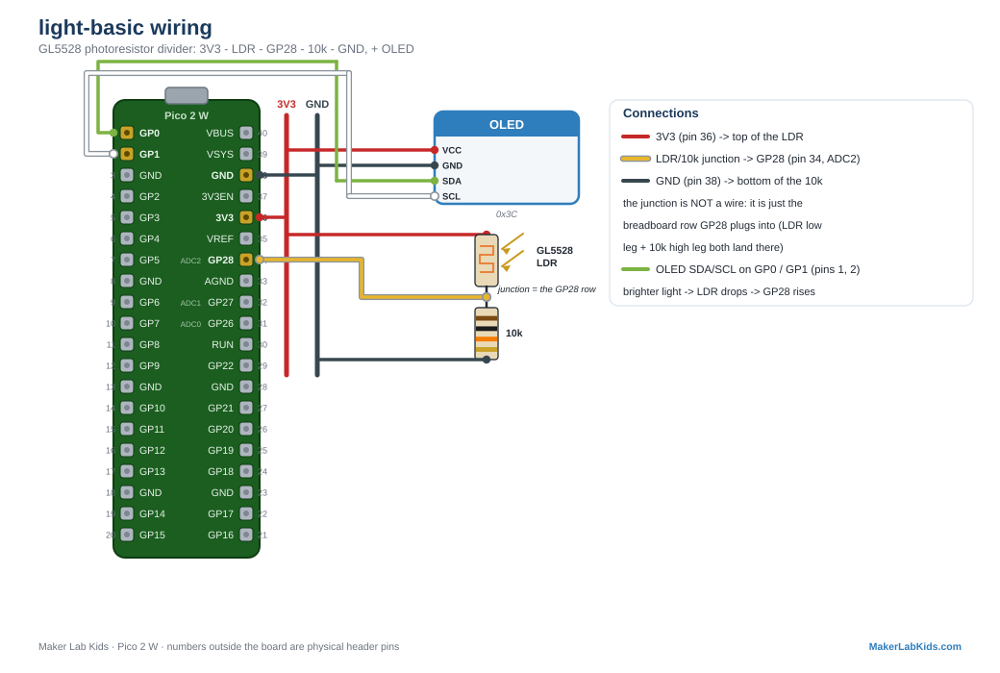
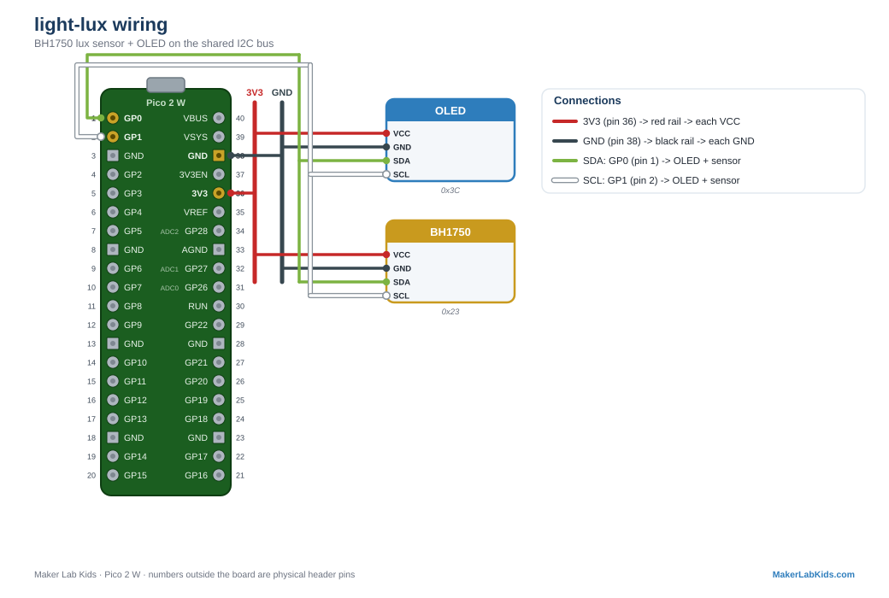
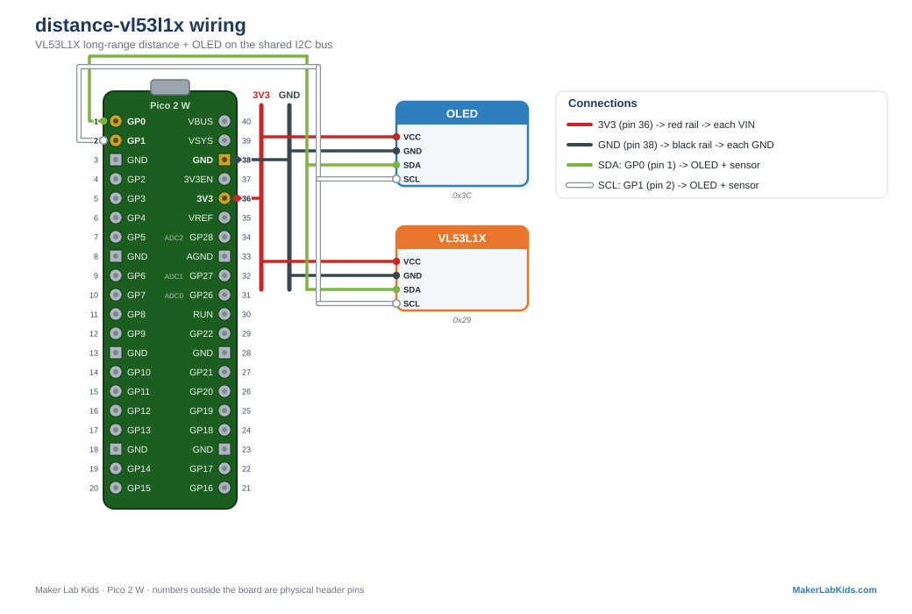
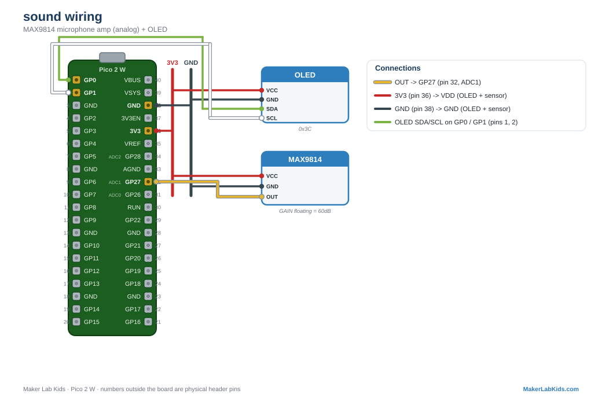
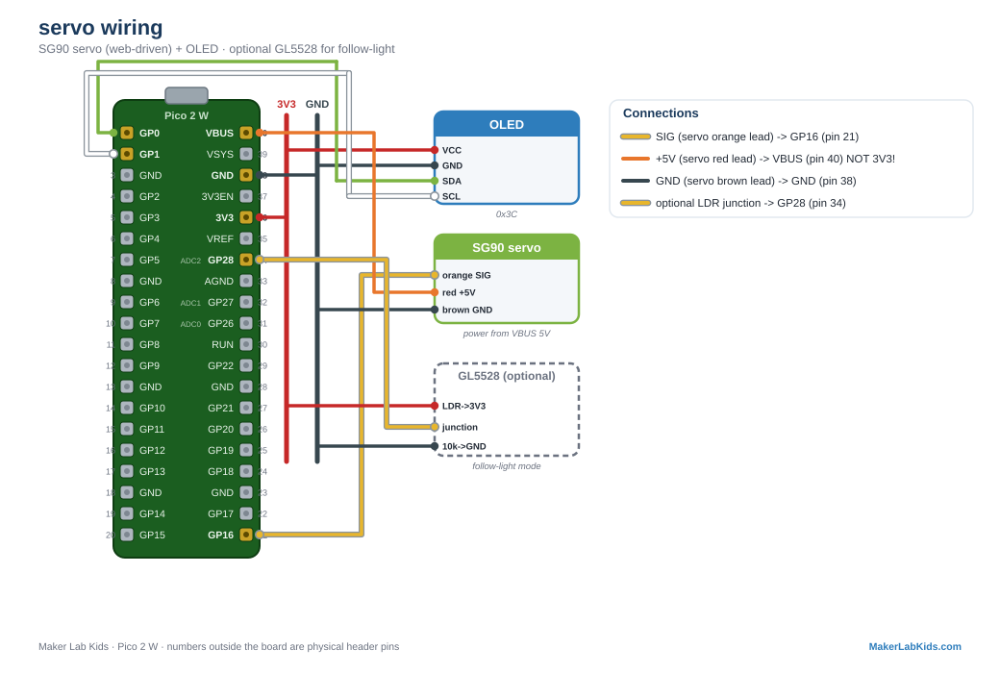

Pick what you want to measure. Each one is a sensor you wire to your Pico, with a picture of exactly how, notes for wiring more than one, and a one-click link that loads the code. Every station shows its reading on the little screen and on your phone.
Wire colors, everywhere in this guide: red = power (3V3), black = ground, green = data (I2C SDA and the 1-Wire probe bus), white = clock (SCL), yellow = a lone signal. Numbers outside the board are the physical pins you count to.
Not sure where to start, or want it all on one board? This single install puts every project below onto the Pico, each in its own folder. Stop one, open another, run it — no reloading.

measures temperature, humidity & pressure, all at once
One small part reads all three. Great for "inside the bin vs. outside" comparisons, and its pressure channel doubles as a weather clue.
More than one? Both share the same green/white I2C wires, but two identical
BME280s can't sit on one bus unless they have different addresses. Bridge one sensor's SDO pad
to move it from 0x76 to 0x77 — so at most two per bus (one inside,
one outside is the classic pair).

measures temperature in soil or water
Rugged probes on a wire. This is the sensor behind the heat-map and worm-migration builds.
More than one? This bus is built for it — every probe has a unique factory serial, so many share the same three wires. About 10–15 are easy on the 4.7k pullup; for a dense bin drop to a 2.2k–3.3k pullup and daisy-chain the probes; past ~50, split onto a second GPIO. See the many-on-one-wire diagram.
measures how wet the bedding is, dry-to-soaked as a percent
Stick it in the soil; calibrate in two minutes (dry in air = 0%, dip in water = 100%) right from the dashboard.
More than one? Each probe needs its own analog pin, and the Pico has only three (GP26/27/28). Want a moisture gradient at several depths? Add an ADS1115 over the green/white I2C wires for four more analog inputs. See the several-at-once diagram.

measures brighter / darker
A cheap classic. Perfect for "how dark is it inside the worm bin with the lid on?"
More than one? Like moisture, each one uses an analog pin (three on the Pico: GP26/27/28). Beyond three, add an ADS1115 for four more.

measures real light levels in lux
Actual numbers you can compare between rooms and days. (A shared classroom sensor.)
More than one? It rides the green/white I2C wires. Two on one bus need
different addresses — tie the ADDR pin high on one to move it to 0x5C —
so at most two per bus.
measures the gap down to the bedding surface
Mounted in the lid, it watches the surface. As bedding settles, the gap grows; a sudden jump means someone disturbed the bin.
More than one? Every VL53L0X ships at the same address (0x29),
so two can't share a bus as-is — you'd have to power them up one at a time (XSHUT) and
re-address each. For the classroom, run one per bin.

measures distance up to 4 meters
For deeper bins with more headroom, or room-scale experiments.
More than one? Same story as the VL53L0X — shared 0x29
address, so one per bus unless you re-address with XSHUT. Note it shares that address with the
VL53L0X too, so don't put both on one bus.

measures how loud it is
A live loudness meter. Clap, talk, or play music and watch the bar jump.
More than one? Each mic uses one analog pin (three on the Pico: GP26/27/28), or add an ADS1115 for more. For true whisper-quiet worm listening you want the shared geophone rig instead — see the "Next Level" ideas.

an actuator: it moves to any angle you tell it
Drive it from a slider on your phone, sweep it automatically, or make it follow the light. The moment code moves something real.
Wiring, the part that trips everyone up: the red power wire goes to VBUS = physical pin 40 (5V), never 3V3 — a servo with no power just sits there, no matter what the code says. Signal (orange) to GP16 (physical pin 21); ground (brown) to any GND (e.g. pin 38). The demo does a little wiggle on boot: no wiggle means it is power or wiring, not the code.
More than one? Each servo needs its own PWM-capable GPIO (most pins qualify) and 5V power. Share the ground.
Brown-outs (why the Pico keeps rebooting): a servo gulps a big spike of current the instant it starts moving, and far more if it stalls. Off USB that spike can dip the 5V rail enough to reset the Pico — the screen blanks and it reboots every time the servo moves. Best fix: give the servo its own 5V supply (a phone charger or battery pack), sharing only the ground with the Pico (signal still goes to the Pico). Sticking with USB power? Solder a fat capacitor (470–1000µF electrolytic, mind the +/- polarity) across the servo's 5V and GND, right at the servo, to soak up the spikes.
The showcase build: two air sensors (inside & outside), a row of temperature probes, two moisture probes, light, sound, compaction, two servos, and a relay — all running together, with a full control dashboard (units, calibration, and a wiring/pinout guide built into the menu). This is where a real worm-bin station lives.
{kind=link}
{kind=link}